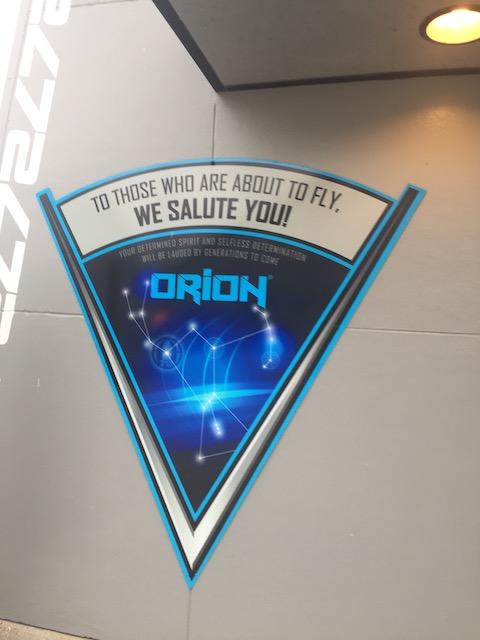
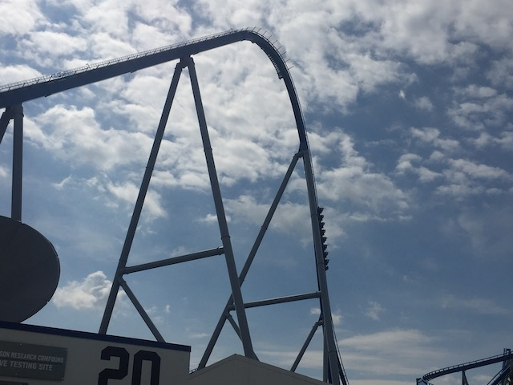
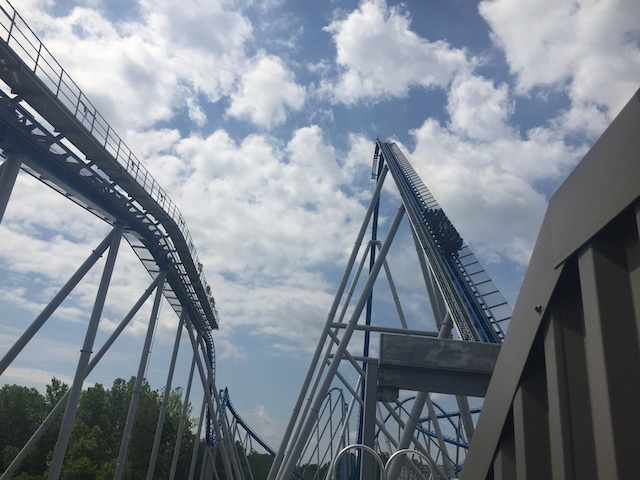

| |
Orion Review

We're here at Kings Island, where we will be riding their shiny new B&M Giga Coaster (quite a rarity), Orion. Sure, this ride is clearly not as good as Fury 325, it still is a B&M Giga and a great overall ride. And BTW, YES!!! Orion is a giga coaster. All the coaster enthusiasts who are arguing that it's technically a hyper coaster because the top of the lifthill is technically 295 ft and the drop is only 305 ft because it takes advantage of the terrain is just so f*cking stupid. If that's the logic you're taken (which I don't agree with, but let's just be consistant and use their own standards), then THIS isn't a hyper coaster. And neither is THIS. Neither of the lifthills exceed 200 ft. But they don't have their hyper coaster status challenged. Because this whole thing is just a way for obnoxious little twat enthusiasts to feel smug and self-righteous about themselves. And those people need to shut the f*ck up! Sorry about the tangent. Those people just REALLY piss me off. Back to Orion. Honestly, this ride is a lot better than I was expecting. It's just a really fun ride. So yeah. Let's hop in the trains, pull down the clamshell restraints, and we're off! We begin to climb the lifthill. Just keep climbing. Just keep climbing. There's honestly not to see as far as views go on this ride. Aside from Racer and Orion itself, you're mostly just looking at trees, and the dullness that is the state of Ohio (which really has nothing outside of roller coasters). Though eventually, we reach the top. And then comes the first drop. And honestly, the first drop on any giga coaster is gonna kick ass. Out of all 5 I've ridden (Leviathan is the only one I'm still missing), the first drop is ALWAYS great. I mean, it's a 300 ft drop. That is gonna POUR on the speed just thanks to gravity and the laws of physics alone. But on top of that, it's pretty steep as well. So you just get that falling sensation. Sure, I will admit that I prefer the first drop on Millenium Force. But both are great first drops (Hmm. Potential Top 10 List for the future?). We then head up into a giant banked airtime hill. OK. This isn't as crazy as it sounds, but it's still a lot of fun overall. I mean, it still is lateral floater air. I know thanks to the rise of RMCs (You really should add one in the Vortex spot. If it wasn't demolished before RMC became a thing, Son of Beast would've been a PERFECT candidate for conversion), this isn't anything to scream about. It's still really fun. Sideways airtime is always good. And of course, we rise back down, and get all our speed back. We then head up a big hill, losing a lot of our speed. But of course, we get it back. We head down a spiral drop. This gives us not only all our speed back, but some good laterals as well. And now that we have most of our speed back, we aren't gonna be losing it anytime soon. We then head towards a smaller airtime hill. Of course, we plow through that like it's nothing. And this gives us a nice long sustained moment of floater air. I know ejector air is more of my thing. But this unquestionably a cool moment on the ride. We then head through another airtime hill, and BOOM!!! A trim. GAH!!! Luckily, this hill does still have some airtime. And we're still going pretty fast. I think the fact that the trim was designed into the ride and is meant to be there, makes it not nearly as bad as when it's added later on to reduce intensity, like on Raging Bull, which GREATLY hurts that ride and diminishes its potential. We then head into an upward helix, which while not blackout worthy, or even as good as the upward helix on Nitro, is still a ton of fun. And hey. This is giving us laterals. Something that its older brother up north, Millenium Force, doesn't have any of. We then head down a curved drop, and gain more speed. Head straight up another curved hill which gives us some more lateral airtime. That's always good. Rise up, get another pop of airtime, and.....right into the brake run. BOO!!! That is by far my biggest critique of Orion. It is on the short side. This honestly is the shortest out of all the giga coasters I've ridden. It unquestionably feels the shortest, and I wouldn't be surprised if it also was literally the shortest, both in time and track length. We continue to go down the super long and downward sloped brake run. Seems kind of excessive. I feel like the short length is solely because Cedar Fair didn't want to spend more money because Giga Coasters are very expensive. It's a shame because this is REALLY good. A damn good ride. So yeah. It may not be the best ride ever (whether it's better than Millenium Force is hard to say. I go back and forth between those two rides). It's a really fun ride and something I highly recommend riding if you're at Kings Island.
8/10
Location: Kings Island
Opened: 2020
Built by: B&M
Last Ridden: June 21, 2021
Orion Photos








Home
|